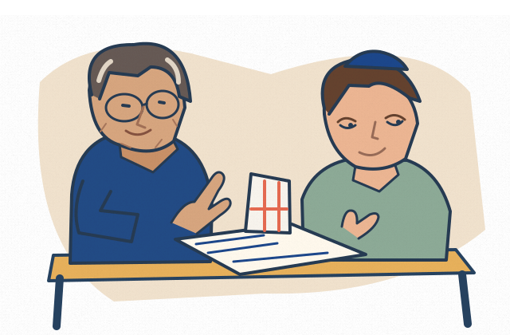
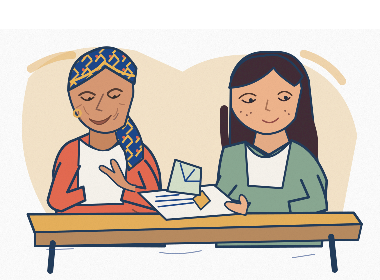

ARCHITECTURE
An hour with an architect
Look at sketches and a model. Hear how a building moves from idea to reality—over coffee or in a studio.
See this exampleTHE JEWISH MUTUAL · A GROWING JEWISH NETWORK
See what different professions are really like—through conversations, demonstrations, hands-on projects and visits.
Tell us what interests you. We're building the connections to make these experiences possible.
Women-forward launch, welcoming Jewish young adults across backgrounds. These are ideas in development, not confirmed events.

Real people. Real curiosity.
EXAMPLE EXPERIENCES
It doesn't always take a workplace visit. These are possibilities we're developing.

Look at sketches and a model. Hear how a building moves from idea to reality—over coffee or in a studio.
See this exampleWatch an engineer demonstrate a design, then try solving a small problem together.
See this exampleUse a sample listing to see how property values, marketing and negotiations work.
See this exampleOther possibilities: career chats, portfolio reviews, workshops, job shadowing with permission, and hands-on challenges.
More example ideasIllustrative examples only. No specific mentors, visits, programs or placements have been confirmed.
FOR YOUNG ADULTS
Tell us what interests you, and we'll be in touch as the network grows.